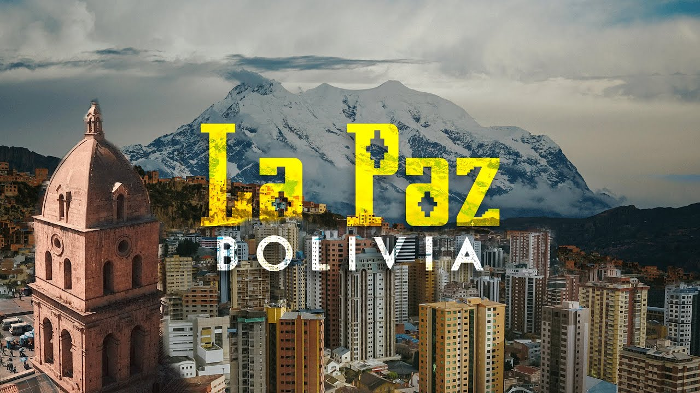
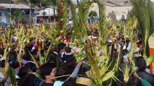

Los 8 días de Semana Santa
Domingo de Ramos
El Domingo de Ramos conmemora la entrada de Jesús
en Jerusalén (21:1-9), cuando se colocaron ramas de palma en su camino,
antes de su arresto el Jueves Santo y su crucifixión el Viernes Santo.
Marca así el comienzo de la Semana Santa, la última semana de la Cuaresma.

Lunes Santo
El Lunes Santo es el segundo día de la Semana Santa y marca el inicio de los eventos más intensos de la Pasión de Cristo. Aunque las tradiciones pueden variar entre países y regiones, en Bolivia y en muchos países de tradición católica, el Lunes Santo tiene significados especiales, tanto religiosos como culturales. Aquí te cuento lo más común que se hace en este día:
Procesiones religiosas: En varias ciudades bolivianas, se realizan procesiones en honor a Jesús del Huerto o Jesús Nazareno. En algunas regiones, se escenifica la entrada de Jesús al Templo de Jerusalén, donde comienza a enseñar y confrontar a los mercaderes. Es un día de recogimiento y oración.
Misas especiales: Las iglesias celebran misas dedicadas a este día, recordando los pasajes del Evangelio en los que Jesús muestra su autoridad espiritual. En las homilías se reflexiona sobre el inicio de su camino hacia la cruz y su entrega total por amor.
Actos de penitencia y confesión: Muchas personas aprovechan este día para confesarse y prepararse espiritualmente para los días más importantes de la Semana Santa. Es un tiempo de limpieza interior y renovación de la fe.
Rezos del Vía Crucis: Aunque el Vía Crucis se reza especialmente el Viernes Santo, algunas comunidades lo inician desde el Lunes Santo, recorriendo las estaciones cada día hasta el viernes. Esto es común en comunidades muy devotas o rurales.
Inicios de representaciones teatrales: En lugares como Cochabamba o Sucre, algunos grupos de teatro comienzan sus representaciones bíblicas desde el Lunes Santo, mostrando escenas de la vida de Jesús y su camino hacia el Calvario.
Martes Santo
El Martes Santo, tercer día de la Semana Santa, es un momento clave de reflexión y preparación espiritual que en Bolivia se vive con devoción en cada departamento, aunque las expresiones varían según las costumbres locales. Este día recuerda los enfrentamientos de Jesús con las autoridades religiosas de su tiempo y su enseñanza sobre la fe verdadera, la humildad y la vigilancia espiritual. Aquí te cuento cómo se celebra y qué se hace en general en Bolivia durante el Martes Santo:
Miercoles Santo
El Miércoles Santo es una jornada de profundo simbolismo dentro de la Semana Santa en Bolivia, marcada por el recuerdo de la traición de Judas Iscariote, que entrega a Jesús a las autoridades a cambio de 30 monedas de plata. Esta fecha invita a meditar sobre la fidelidad, el perdón y el arrepentimiento. En Bolivia, muchas regiones tienen tradiciones religiosas y culturales particulares para este día. A continuación, te detallo cinco aspectos clave del Miércoles Santo en el país:
Jueves Santo
El Jueves Santo es uno de los días más significativos de la Semana Santa en Bolivia, marcado por una profunda espiritualidad y tradiciones que combinan la liturgia católica con expresiones culturales locales. A continuación, se detallan algunas de las prácticas más destacadas en todo el país:
1. Misa de la Cena del Señor y Lavatorio de los Pies
En todas las parroquias bolivianas, se celebra la Misa de la Cena del Señor, que conmemora la Última Cena de Jesús con sus apóstoles. Durante esta ceremonia, se realiza el lavatorio de los pies, donde el sacerdote lava los pies de doce personas, simbolizando el acto de humildad de Cristo. Esta tradición es especialmente emotiva en comunidades como Villa Cochabamba y Montero, donde se lleva a cabo con gran solemnidad.
Viernes Santo
Este día es feriado nacional en Bolivia y se conmemora la crucifixión y muerte de Jesucristo. Las actividades principales incluyen el rezo del Vía Crucis, procesiones solemnes y la Adoración de la Cruz en las iglesias. En ciudades como La Paz y Sucre, se realizan representaciones vivientes de la Pasión de Cristo, donde actores locales dramatizan los últimos momentos de Jesús. Además, es común que los fieles practiquen el ayuno y la abstinencia de carne como signo de penitencia .
Sabado Santo
Conocido también como Sábado de Gloria, es un día de silencio y reflexión que culmina con la Vigilia Pascual al anochecer. Durante esta ceremonia, se bendice el fuego nuevo y el agua, se enciende el Cirio Pascual y se proclama la resurrección de Cristo. En Cochabamba, por ejemplo, la vigilia comienza a las 20:00 horas y se extiende hasta la madrugada del Domingo de Resurrección . Aunque no es obligatorio, algunos fieles optan por mantener el ayuno hasta este día como preparación espiritual .
Domingo Pascua de Resurrección
El Domingo de Pascua celebra la resurrección de Jesús y es considerado el día más importante del calendario cristiano. Las festividades comienzan con misas al amanecer y, en muchos lugares, con procesiones de la Aurora de Resurrección, donde se lleva en andas la imagen de Cristo resucitado. En comunidades como Villa Serrano (Chuquisaca), estas celebraciones incluyen música, danzas y comidas típicas que reflejan la alegría de la resurrección . A diferencia de los días anteriores, en esta jornada se levanta la abstinencia de carne y se disfruta de banquetes familiares.
En Oruro, la Semana Santa combina fervor religioso con expresiones artísticas. Una tradición destacada es el Encuentro Nacional de Esculturas en Arena en Cochiraya, donde artistas locales e internacionales esculpen escenas bíblicas en los arenales, recreando pasajes de la Pasión de Cristo. Además, las familias orureñas preparan los tradicionales "doce platos", que incluyen arroz con leche, ají de papaliza, locro de zapallo, pescado, humintas, entre otros, simbolizando a los doce apóstoles. Las procesiones y el Vía Crucis también forman parte esencial de las celebraciones, con representaciones vivas del calvario de Jesús.
Durante la Semana Santa en Santa Cruz de la Sierra, Bolivia, se viven diversas tradiciones religiosas y culturales que reflejan la devoción de la comunidad. Una de las prácticas más destacadas es la visita a siete iglesias el Jueves Santo, un recorrido que simboliza las etapas del juicio y pasión de Jesús. Entre las iglesias más frecuentadas en este recorrido se encuentran San Andrés, San Francisco, Jesús Nazareno, San Roque, La Mansión, La Merced y la Basílica Menor de San Lorenzo, conocida popularmente como "La Catedral" .
En San José de Chiquitos, una localidad del departamento de Santa Cruz, se mantiene viva una tradición que data de hace más de 300 años, heredada de los Padres de la Compañía de Jesús. Durante la Semana Santa, los josesanos recuerdan la pasión y muerte de Jesús de Nazaret con ceremonias y procesiones que reflejan una profunda herencia cultural y religiosa .
En Potosí, la Semana Santa se celebra con una combinación de actos religiosos y costumbres locales. Las procesiones, como la del Santo Sepulcro, recorren las calles de la ciudad, mientras que las iglesias ofrecen misas especiales. El Domingo de Pascua es un día de alegría, con celebraciones eucarísticas donde los sacerdotes visten casullas bordadas con hilos de oro y plata . Además, se organizan ferias gastronómicas que ofrecen platos típicos de la temporada .
En Sucre, capital de Chuquisaca, la Semana Santa es una de las festividades más importantes del año. Las actividades incluyen procesiones, misas y representaciones teatrales de la Pasión de Cristo. Además, se organizan ferias gastronómicas donde se ofrecen platos tradicionales como el mondongo y los buñuelos.
Estas tradiciones reflejan la diversidad cultural y religiosa de Bolivia, y ofrecen una oportunidad para que tanto locales como visitantes participen en celebraciones que combinan fe, arte y comunidad.
En Tarija, la Semana Santa se caracteriza por la participación activa de la comunidad en las procesiones y eventos religiosos. Las iglesias locales organizan misas y recorridos con imágenes sagradas, y es común la representación de la Pasión de Cristo en espacios públicos. La gastronomía también juega un papel importante, con la preparación de platos típicos de la temporada.
En Cochabamba, la Semana Santa inicia con el Domingo de Ramos, donde se elaboran figuras con palmas que son bendecidas para proteger los hogares. El Jueves Santo se realiza la misa con el Lavatorio de los Pies, seguida por el Vía Crucis al Cristo de la Concordia y la procesión del Santo Sepulcro. Además, se celebra la "Feria de los 12 platos", una tradición gastronómica que busca reavivar las costumbres de la fe católica y promover las tradiciones locales.
En Totora, Cochabamba, las celebraciones incluyen la elaboración de los doce platos sin carne roja y la representación del Vía Crucis viviente por las calles del pueblo. El Lunes de Pascua se realiza el "Tinku K’ajchanaku", un encuentro ritual donde representantes de diferentes regiones se azotan en la pantorrilla, rememorando los azotes que recibió Jesucristo antes de su crucifixión.
Wikipedia, la enciclopedia libre
En otras regiones del país, como en el oriente boliviano, las tradiciones pueden variar, pero mantienen el enfoque en la conmemoración de la pasión, muerte y resurrección de Jesucristo. Las procesiones, misas y actividades religiosas son comunes, adaptándose a las particularidades culturales de cada departamento.
En Beni, la Semana Santa se vive con una mezcla de tradiciones indígenas y católicas. Las comunidades participan en procesiones fluviales, donde las imágenes religiosas son transportadas en canoas adornadas por los ríos de la región. Estas ceremonias se complementan con danzas típicas y cantos en lenguas originarias, reflejando la riqueza cultural y espiritual del departamento durante esta época del año.
Cada departamento de Bolivia aporta su singularidad a la celebración de la Semana Santa, fusionando la fe católica con tradiciones locales que enriquecen el patrimonio cultural del país.
Durante la Semana Santa, el departamento de Pando, en el norte amazónico de Bolivia, celebra con una combinación de fervor religioso y tradiciones culturales propias de la región. Aunque las procesiones y misas son menos multitudinarias que en otras partes del país, las comunidades locales participan activamente en actos litúrgicos y representaciones del Vía Crucis, adaptadas al contexto amazónico.
La gastronomía típica de Pando durante esta época incluye platos como el sudado de surubí, un guiso elaborado con este pez de río en una salsa de tomate y especias, y el sonso de yuca, una preparación a base de yuca y queso que se sirve caliente. Estos platos reflejan la riqueza culinaria de la región y son parte esencial de las celebraciones.